FeederEditor Tools
Bộ editor tool cho Unity 2022.3 trở lên: thao tác hàng loạt trên asset và prefab, đổi tên theo pattern, tối ưu mesh/texture/material, scene loader và script template. Tất cả đều là tool chạy trong Editor, không có code runtime.
Yêu cầu
Thành phầnGhi chú
2022.3 trở lên.
Bắt buộc. Toàn bộ giao diện tool dựng trên OdinMenuTree / OdinEditorWindow.
Cài đặt
- Mở Window > Package Manager.
- Bấm dấu cộng rồi chọn Add package from git URL.
- Dán đường dẫn bên dưới và bấm Add.
https://github.com/BingoBoiz/FeederEditorTools.git?path=/Packages/com.feeder.editortoolsPackage lõi không kéo theo thư viện ngoài nào. Những tool cần thư viện nặng nằm ở module tuỳ chọn, cài thêm khi cần.
Cửa sổ và menu
- Tools▸
- Feeder▸
- Editor Tools▸
- Tool Hub
- Modules
- Documentation
- Windows▸
- Settings▸
- Scene Loader
- Asset Cache
- Texture Modifier
- Mesh Modifier
- Mesh Palette Analyzer
- Script Template
- GoogleSheet Importer
- Empty Trash
Rê chuột hoặc Tab vào một mục để xem nó mở cửa sổ gì.
Danh sách tool
Mở Tools > Feeder > Editor Tools > Tool Hub, cây tool bên trái chia theo ba nhóm dưới đây. Mỗi tool có nút Docs mở thẳng trang của nó.
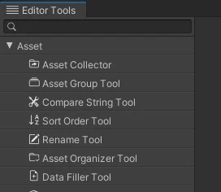
Asset
9 tool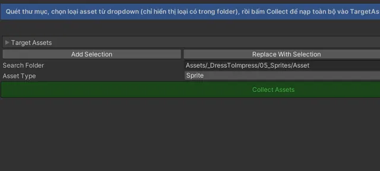
Asset Group ToolGom Target Assets thành nhóm theo pattern tên hoặc từ khóa, rồi ghi một nhóm trở lại Target Assets.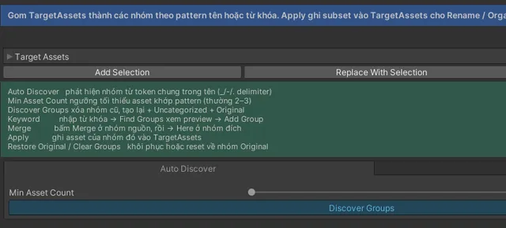
Compare String ToolKhớp mờ Target Assets với các giá trị của một enum theo tên, bỏ qua hoa thường, ký tự đặc biệt, đảo thứ tự token và lỗi gõ.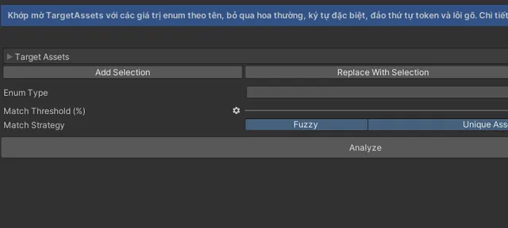
Sort Order ToolSắp xếp Target Assets đúng theo thứ tự khai báo của một enum, khớp bằng tên.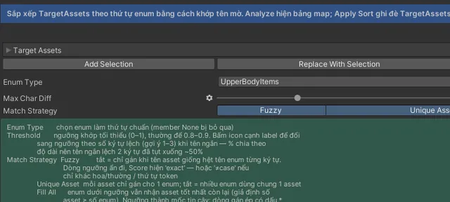
Rename ToolĐổi tên asset hoặc scene object theo pattern, hoặc theo tìm và thay thế, có xem trước và hoàn tác.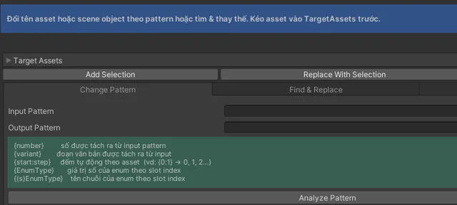
Asset Organizer ToolDi chuyển Target Assets vào thư mục đích, giữ nguyên thứ tự trong danh sách.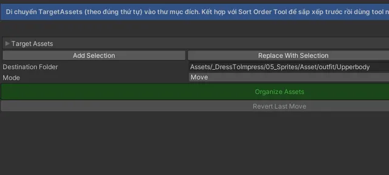
Data Filler ToolTự điền một field chứa nhiều asset trên ScriptableObject hoặc Component bằng các asset trong Target Assets.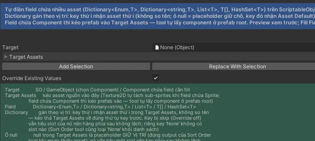
Character Mesh Updater ToolChuyển SkinnedMeshRenderer và MeshRenderer từ một armature cũ sang armature mới, giữ nguyên hierarchy gốc.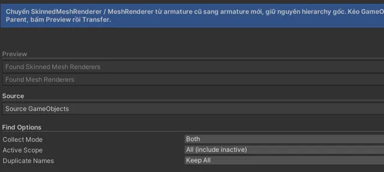
Data Cloner ToolChép một field dạng collection (Dictionary, List, HashSet) từ ScriptableObject này sang ScriptableObject khác.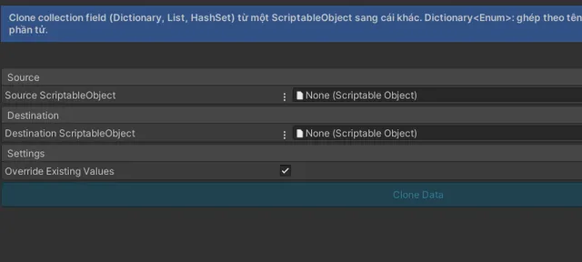
Prefab
8 tool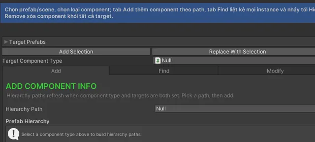
Prefab Modify ToolSửa Active, Layer, Tag, Transform của một node, hoặc xóa node đó, trên hàng loạt prefab.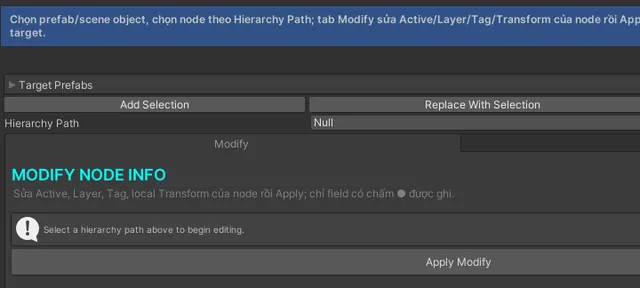
Prefab Variant Creator ToolTạo hàng loạt prefab variant từ một base prefab và một danh sách model.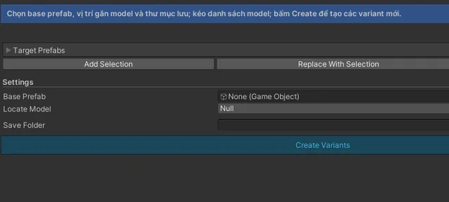
Name Offset ToolDời vị trí của node chứa tên hoặc nhãn theo một offset Y, trên hàng loạt target.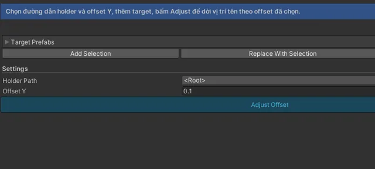
Model Scale To Collider ToolScale model sao cho vừa khít collider của một base prefab.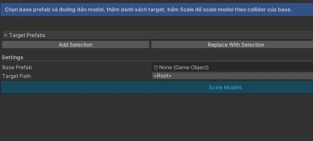
Mesh Box Collider Fitter ToolTạo node con _Col chứa BoxCollider khớp chính xác với mesh theo hộp bao định hướng (OBB).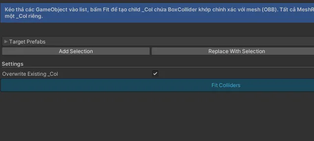
Component Replacer ToolThay một loại component bằng loại khác và chép sang những field trùng tên và trùng kiểu.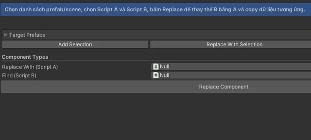
Missing Component Handler ToolXử lý những GameObject có missing script: thay bằng component khác, xóa hẳn, hoặc chỉ liệt kê.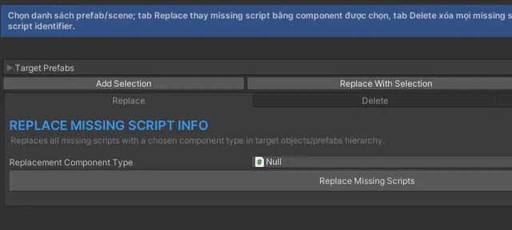
Optimize
7 tool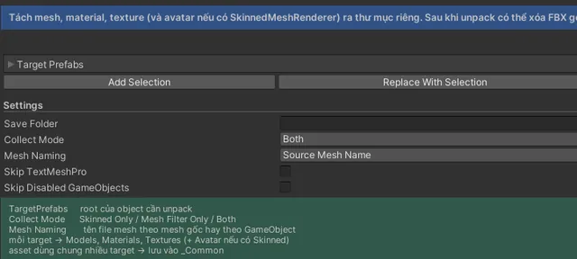
Unpack Animation ToolTách AnimationClip và AnimatorController hoặc Override ra thư mục riêng rồi gán controller mới trở lại Animator.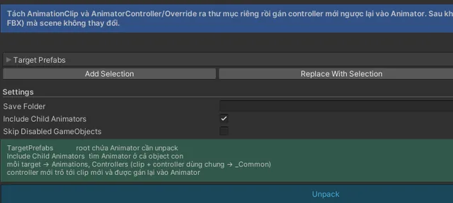
Deduplicate Texture ToolTìm texture giống hệt nhau (cùng độ phân giải và cùng pixel) rồi gộp về một texture duy nhất.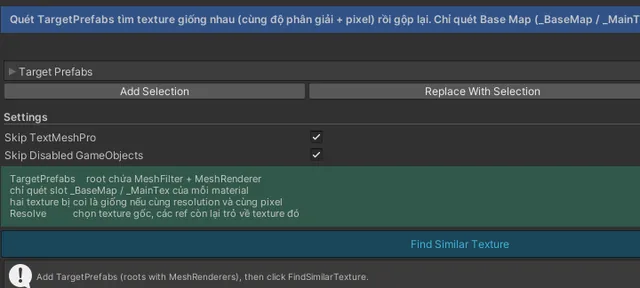
Deduplicate Material ToolTìm material trùng nhau theo base map texture rồi gộp về một material.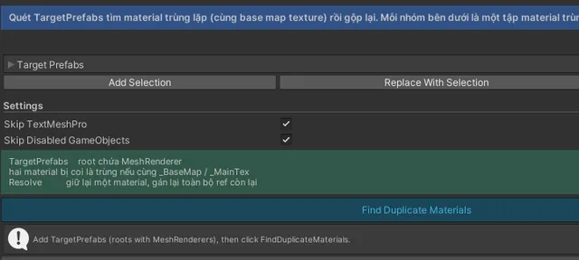
VFX Flipbook Trim ToolCắt bớt atlas flipbook của VFX khi Texture Sheet Animation chỉ dùng một phần tile, rồi tự bù lại numTiles và frameOverTime để hiệu ứng chạy y hệt.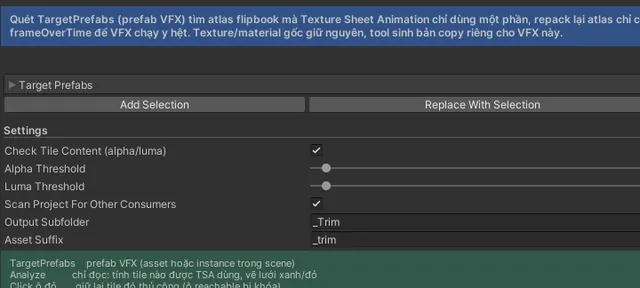
Deduplicate Mesh Toolmodule meshdedupSo sánh các mesh asset cạnh nhau, tìm mesh giống nhau trong scene rồi canh vị trí và thay thế.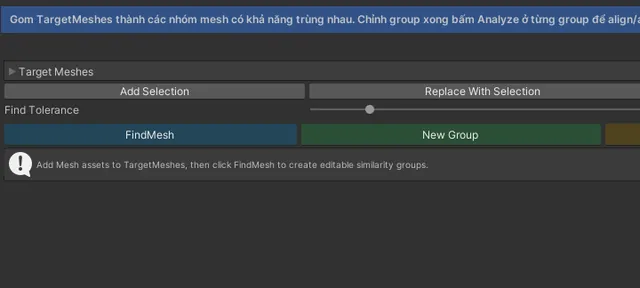
Repack Models Toolmodule repackfbxXuất từng mesh đích ra file FBX nằm cạnh asset gốc, trỏ lại tham chiếu trong scene sang FBX mới, rồi xóa mesh asset cũ.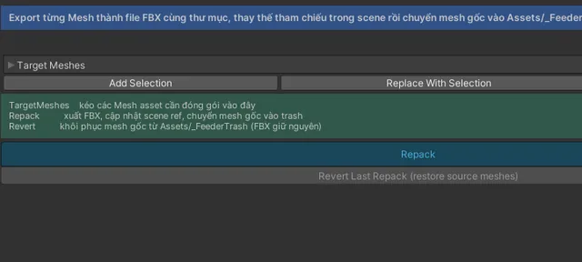
Không có tool nào khớp. Thử từ khác, ví dụ "mesh" hoặc "prefab", hoặc chọn lại nhóm Tất cả.